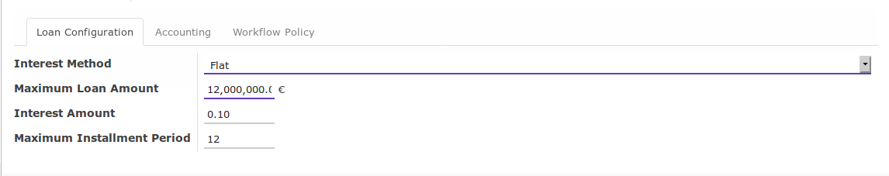
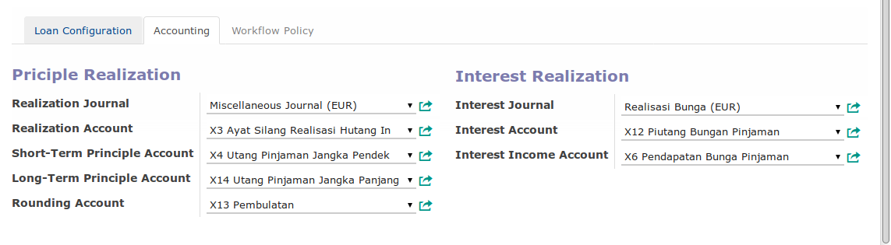
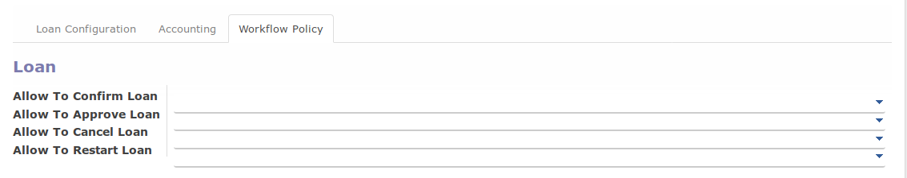

Loan Type
A. PENJELASAN ISIAN
A.1. BAGIAN HEADER

Loan Type
Nama tipe pinjaman. Wajib diisi.
Loan Type Code
Kode tipe pinjaman. Wajib Diisi.
Active
Aktifkan jika data tipe pinjaman masih aktif digunakan. Non aktifkan jika tipe pinjaman sudah tidak digunakan lagi.
Direction
Pilihan yang dimungkinkan:
- In: Pinjaman dari pihak lain kepada perusahaan
- Out: Pinjaman dari perusahaan kepada pihak lain
Sequence
Sequence yang digunakan untuk penomeran pinjaman. Tidak wajib diisi.
A.2. TAB LOAN

Interest Method
Metode perhitungan bunga pinjaman. Wajib diisi. Pilihan yang dimungkinkan:
- Flat
- Anuity
- Effective
Maximum Loan Amount
Nilai maksimum pinjaman. Wajib diisi.
Intereset Amount
Bunga pinjaman (p.a) dalam persen. Wajib diisi.
Maximum Installment Amount
Maksimum tenor pinjaman dalam bulan. Wajib diisi.
A.3. TAB ACCOUNTING

Realization Journal
Buku jurnal yang akan digunakan untuk mencatat penjurnalan realiasi pinjaman. Tidak wajib diisi.
Realization Account
Akun yang akan digunakan pada penjunalan realisasi pinjaman. Pada loan in akun ini akan didebit sedangkan pada loan out akun ini akan dikredit. Akun ini akan didebit/dikredit sebesar Loan Amount*. Tidak wajib diisi.
Short-Term Principle Account
Akun yang akan digunakan pada penjunalan realisasi pinjaman. Akan terbentuk n x journal item pada penjurnalan realisasi pinjaman. n sama dengan jumlah payment schedule yang jatuh tempo setahun semenjak tanggal realisasi. Pada loan in akun ini akan dikredit sedangkan pada loan out akun ini akan didebit. Akun ini akan didebit/dikredit sebesar Loan Amount*. Tidak wajib diisi.
Long-Term Principle Account
Akun yang akan digunakan pada penjunalan realisasi pinjaman. Akan terbentuk n x journal item pada penjurnalan realisasi pinjaman. n sama dengan jumlah payment schedule yang jatuh tempo lebih dari setahun semenjak tanggal realisasi. Pada loan in akun ini akan dikredit sedangkan pada loan out akun ini akan didebit. Akun ini akan didebit/dikredit sebesar Loan Amount*. Tidak wajib diisi.
Rounding Principle Account
Akun yng akan digunakan untuk pembulatan. Tidak wajib diisi.
Interest Journal
Buku jurnal yang digunakan untuk mencatat penjurnalan realisasi bunga pinjaman. Tidak wajib diisi.
Interest Account
Akun yang akan digunakan pada penjurnalan realisasi bunga pinjaman. Akun ini akan dikredit pada loan in atau akan didebit pada loan out. Akun ini akan didebit/dikredit sejumlah interest amount payment schedule. Tidak wajib diisi.
Interest Income Account
Akun yang akan digunakan pada penjurnalan realisasi bunga pinjaman. Akun ini akan didebit pada loan in atau akan dikredit pada loan out. Akun ini akan didebit/dikredit sejumlah interest amount payment schedule. Tidak wajib diisi.
A.4. TAB WORKFLOW

Allow To Confirm Loan
Group-group yang usernya diperbolehkan untuk mengkonfirmasi pinjaman. Jika dikosongkan maka tiap user yang dapat membuka data loan in/out dapat mengkonfirmasi data loan in/out. Tidak wajib diisi.
Allow To Approve Loan
Group-group yang usernya diperbolehkan untuk menyetujui pinjaman. Jika dikosongkan maka tiap user yang dapat membuka data loan in/out dapat menyetujui data loan in/out. Tidak wajib diisi.
Allow To Cancel Loan
Group-group yang usernya diperbolehkan untuk membatalkan pinjaman. Jika dikosongkan maka tiap user yang dapat membuka data loan in/out dapat membatalkan data loan in/out. Tidak wajib diisi.
Allow To Restart Loan
Group-group yang usernya diperbolehkan untuk merestart pinjaman. Jika dikosongkan maka tiap user yang dapat membuka data loan in/out dapat merestart data loan in/out. Tidak wajib diisi.